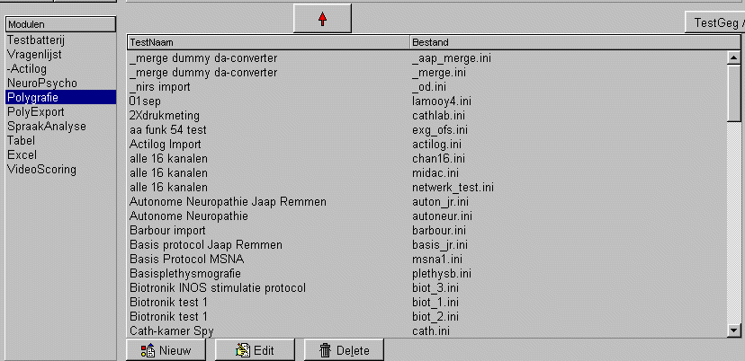

Test Modulen
Inleiding
In het plaatje hieronder, is links de module-lijst en rechts de testenlijsten te zien.
De testenlijst geeft alle beschikbare testen van de betreffende module weer.
Indien slechts 1 module wordt gebruikt (bijvoorbeeld vragenlijsten), dan kan het beste de modulelijst worden verborgen (via Instel /..)
De knoppen onderaan de testenlijst hebben betrekking op de testenlijst.
Nieuw : invoeren van een nieuwe test.
Edit: het wijzigen van een reeds bestaande test.
Delete: het verwijderen van een test. (de test wordt niet echt verwijderd maar hernoemd, dus de test is met de verkenner weer terug te toveren.
